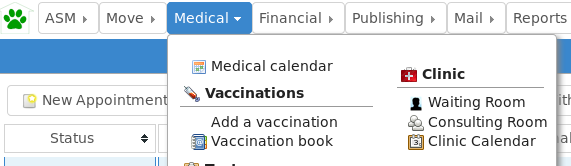
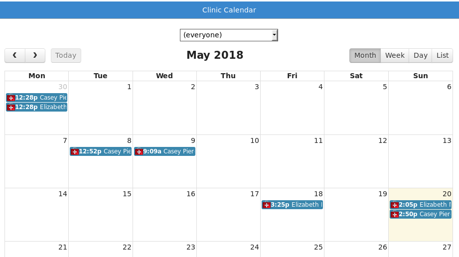

Clinic¶
The clinic interface is used to administrate appointments for an on-site clinic, manage the waiting room and produce invoices for customers.
Waiting Room¶

The waiting room screen shows all appointments that are due today. New appointments can be added here, and a selection of buttons at the top allow appointments to quickly advance through the statuses and perform actions.
Refresh - reloads the list of appointments so that changes made by other users are visible.
Waiting - use this toolbar button when a person arrives for their appointment. Until they are with the vet, the Arrived column will show the length of time they have been waiting in minutes as well as the arrival time.
With Vet - use this toolbar button once the vet has called the person into the consulting room (this button is also available there, so that the vet can update the status depending on your workflow).
Complete - used to mark the appointment as complete. Complete appointments will appear greyed out.
Document - allows a document to be generated from a template with appointment data substituted for tokens. A default “clinic_invoice” document template is included for producing invoices from appointments.
Create Payment - creates a payment record for the person the appointment is for. You can create either a received or due payment so that ASM’s normal payment processes can then be followed and reported on.
To the right of the status on every appointment is an invoice icon. Clicking it will take you to a screen where you can edit the invoice items for that appointment.
Consulting Room¶

The consulting room screen is identical to the waiting room screen, however it only shows appointments that are for the currently logged in user. It is intended for use by vets, so they can see who is currently waiting for them in the waiting room and quickly handle details of their clients for the day.
Clinic Calendar¶
The clinic calendar is a full calendar view, showing day, week and month breakdowns of appointments. By default, appointments for all vets are shown, but you can choose a particular vet from the dropdown to see just their calendar.
Clicking on appointments in the clinic calendar will open the person’s record on the clinic tab, allowing you to make any changes to their appointments.